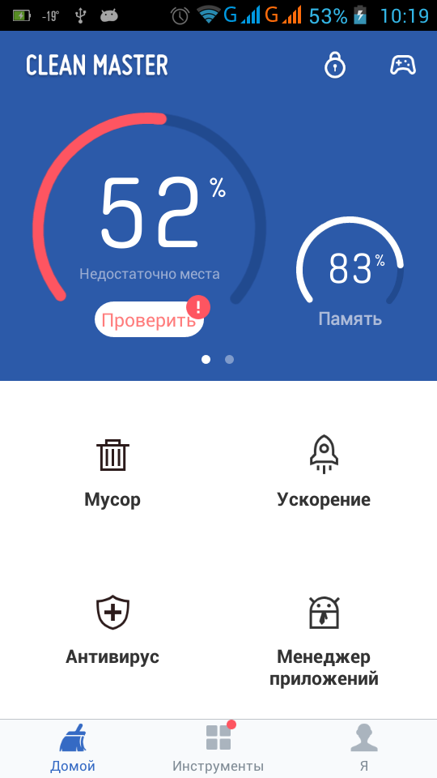
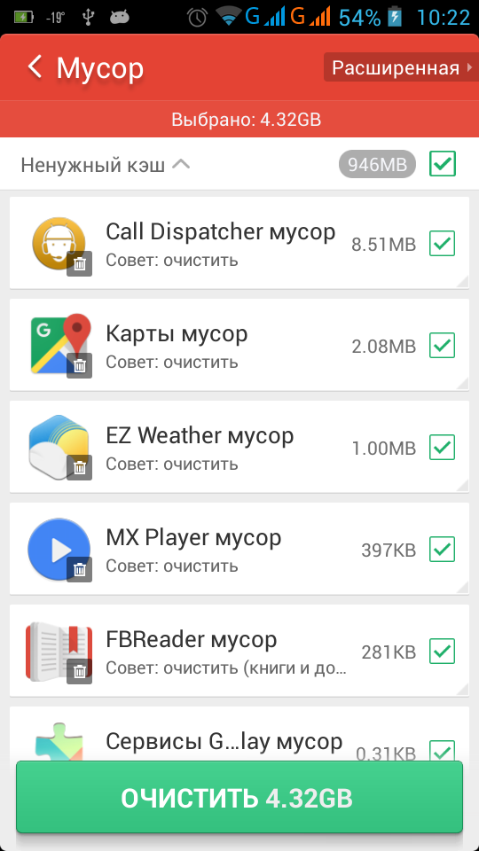

Проблема
При использовании приложения CallDispatcher иногда возникает проблема с так называемым «слётом баз», когда приложение показывает только страну и не показывает регион и оператора и приходится снова и снова переустанавливать базы.
Это может происходить из-за того, что на вашем устройстве установлено одно из приложений, которые называют клинерами, таск-киллерами или оптимизаторами. Разработчики подобных приложений позиционируют их как нужные и полезные инструменты, помогающие пользователю оптимизировать работу устройств под управлением ОС Android.
Тем не менее, из-за несовершенства алгоритмов подобных приложений, многие из них считают папку с базами CallDispatcher мусором (кэшем, временными файлами) и могут удалять её при «очистке» или «оптимизации» памяти.
Такая проблема возникает, например, если на устройстве установлено приложение Clean Master от Cheetah Mobile или аналогичное от того же разработчика. Clean Master удаляет папку с базами CallDispatcher и может выгружать из памяти процессы приложения CallDispatcher, необходимые для её работы (отображения окон с информацией о вызовах).
Чтобы избежать подобных проблем, проще всего никогда не использовать клинеры, таск-киллеры и прочие «оптимизаторы», потому что они скорее вредны, чем полезны. Но, если вы всё же по каким-то причинам не можете отказаться от их использования, то существует простое решение этой проблемы, показанное далее на примере настройки приложения Clean Master.
Решение
Запускаем Clean Master.

Нажимаем пункт меню «Мусор».
Находим группу «Ненужный кэш». Если группа не раскрыта, то раскрываем группу нажатием. Пролистываем список группы, находим строку с приложением Call Dispatcher. 
Нажимаем на строке и удерживаем.

В появившемся окне нажимаем кнопку [Добавить в белый список].

- Пролистываем список до группы «Оптимизация памяти».
- Раскрываем группу нажатием.
- Пролистываем список группы, находим строку с приложением Call Dispatcher.
- В этом списке работают два варианта: а) нажимаем на строке и удерживаем или б) просто нажимаем на строке.

В появившемся окне нажимаем [Добавить в белый список].


Проверка
-
- Возвращаемся в главное окно нажатием аппаратной кнопки телефона [Назад] или пункта < Мусор.
- Переходим на вкладку [Я].

-
В появившемся списке нажимаем пункт «Настройки».

-
Пролистываем до группы «Белый список».

-
Нажимаем пункт «Мусор».

-
Нажимаем пункт «Задачи».

Результат
Теперь приложение Call Dispatcher добавлено в исключения Clean Master.